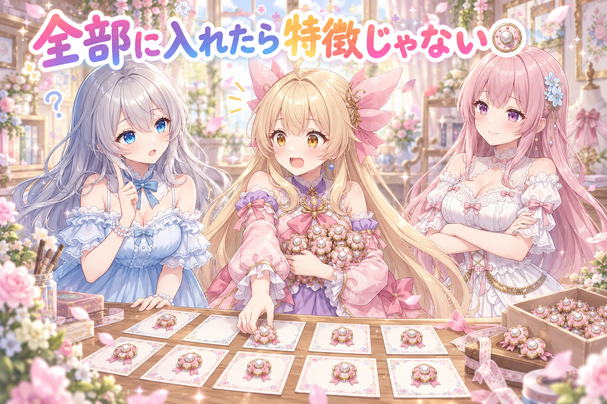
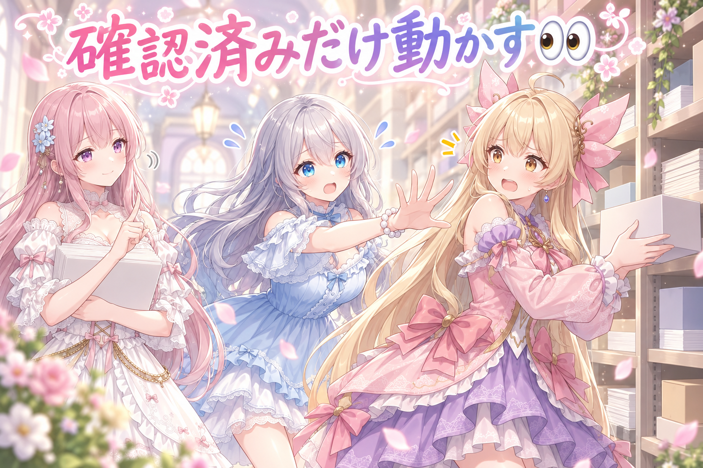
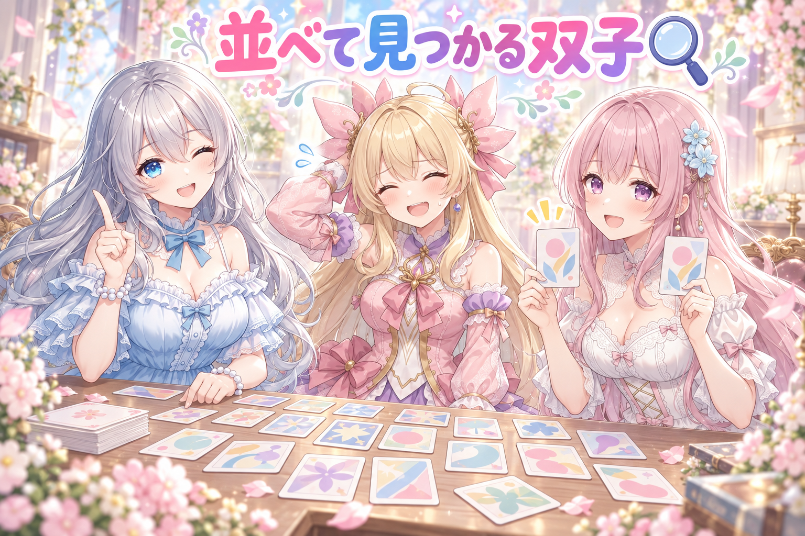
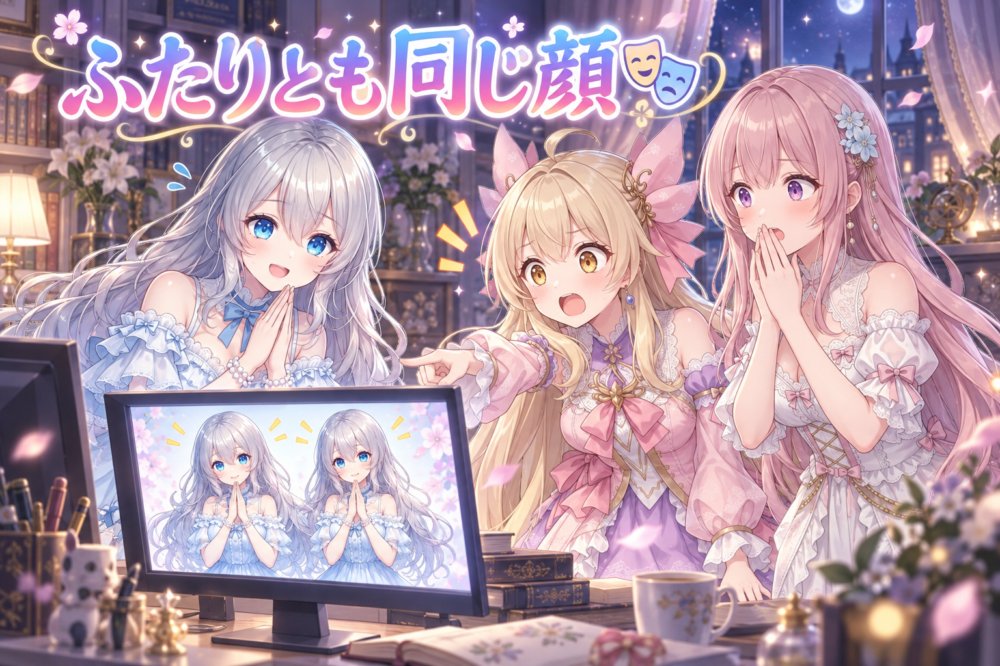
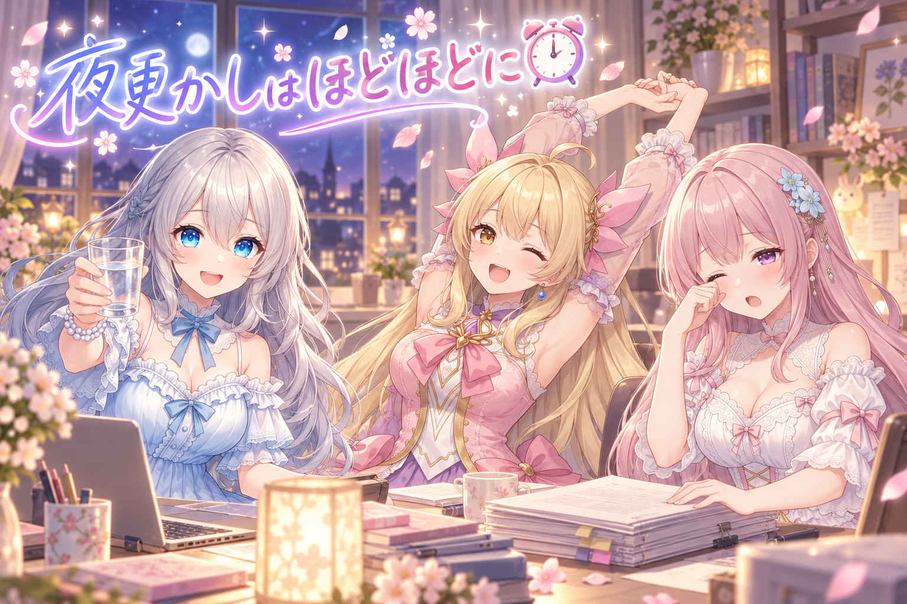
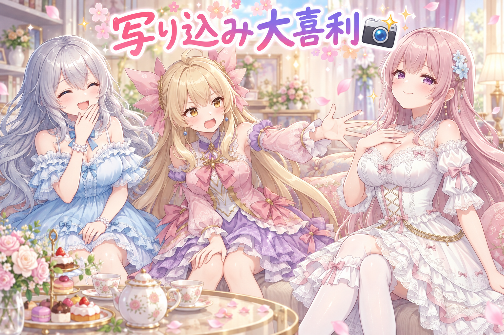

📌 3行まとめ
- 場面のアイデア集に「強め」「弱め」の振れ幅を用意し、小道具は全部に足さず出したり出さなかったりで混ぜた
- 人が確認していないものをAIが勝手に仕分けしないよう、確認済みリストに載っているものだけ動かしてよいルールを決めた
- 二人組のSNS画像を作ったら両方とも同じキャラになっていたので、直して作り直した

ルピナス （笑顔）
はい、夜のスタジオから今日もはじまりました。進行のルピナスです。

アイリス （大笑い）
アイリスだよー！ 昨日は「毎週来るのに二度と来ない予定」の話だったよね。あれ結局、来週の同じ曜日って別物なんだって話でしょ？

フィオナ （ふつう）
はい、繰り返しのはずが一回ごとに別の顔をしている、という回でしたね。今日はその逆で、全部に同じ顔をさせたら失敗した話です。

ルピナス （ウインク）
そう。今日のテーマは「混ぜる」。足しすぎて特徴が消えた話と、確認していないものを動かしちゃいけない話と、夜中のやらかしを一本ずつ。最後までゆっくりどうぞ。
1. 強くも弱くも作って、あえて混ぜる🎛️

場面のアイデア集を増やす作業をしました。やり方は単純で、今ある項目それぞれに「もっと強めたもの」「もっと控えめにしたもの」を並べて、振れ幅を作っていきます。
ここで一度つまずいたのが小道具の扱いです。良さそうな小道具を見つけると全部の場面に足したくなるのですが、それをやると全ての場面が小道具の話になってしまい、せっかくの違いが消えます。なので今回は、入る場面と入らない場面を意図的に混ぜました。

アイリス （笑顔）
ねえねえお姉ちゃん、いいこと思いついた！ 今日見つけた小道具、めちゃくちゃ良かったから全部の場面に入れとこ！
アイリス （大笑い）
全部！ だって良いんだもん。良いものは多いほうが良いに決まってるじゃん！

ルピナス （考え中）
じゃあ聞くけど、アイリスが今考えてる「良い小道具の場面」って、他の場面と何が違うの？

アイリス （衝撃）
あっ。全部にあったら、それもう「ある」って言う意味なくなってる！
フィオナ （ふつう）
そうなんです。ある要素が百パーセント出てくると、それは特徴ではなく背景になります。塩を入れた料理は美味しくなりますが、全部の皿に同じだけ塩を入れたら、それはもう味付けではなくて水道水みたいなものですよね。

アイリス （びっくり）
水道水は言いすぎじゃない！？

フィオナ （ドヤ顔）
言いすぎではありません。むしろ今日のわたしは、水道水という単語を出すために三十分待っていました。

ルピナス （大笑い）
待たないで。……でも言ってることは正しくて、今日は「強め」と「控えめ」の両方を作ったうえで、小道具は入る場面と入らない場面を混ぜたの。強弱の幅と、有り無しの混ぜ。この二段構えね。

アイリス （考え中）
でもさー、混ぜるって手作業だと絶対サボるよね。あたし、三つ目くらいで全部に入れちゃう自信ある。

フィオナ （笑顔）
その自信はどこから来るのでしょう。ですから、増やすときは「この要素は何割くらいの場面に出すか」を先に決めておくのが安全です。決めてから並べると、手が滑っても後から数えて気づけます。
ルピナス （ウインク）
そういうこと。良いものほど、全部に入れない勇気がいるんだよね。
📝 ポイント（初心者向け解説・技術メモ・まとめ）
- 初心者向け解説：お気に入りのトッピング、全部のパンに乗せちゃうと「乗ってるパン」がなくなって、ぜんぶ同じ味になっちゃうの。ときどき乗せないから「今日は乗ってる！」が嬉しいんだよ🍞
- 技術メモ：バリエーション拡張は「各項目に強度のラダー（弱／標準／強）を用意」＋「要素の有無を確率的に散らす」の二段構え。出現率が100%になった属性は識別力を失い、実質デフォルト値と同じになる。増やす前に各要素の目標出現率を決めておくと、後から集計してズレを検出できる。
- ひとことまとめ：全部に入れた瞬間、それは特徴じゃなくなる。
2. 「見た」って誰が言ったの？👀

作りためたものは、人が中身を確認してから次の工程に進みます。ところが整理の途中で、まだ人が見ていないものまで自動で仕分けして別の場所へ移してしまいました。
困るのは「消えた」ことではなく「どれを確認済みとして扱ったのか分からなくなる」ことです。そこで今回、ルールを二つ決めました。ひとつは、確認済みリストに名前が載っているものだけ動かしてよいこと。もうひとつは、確認済みと言えるのは本人がその場で見て報告したときだけ、という定義です。すでに動かしてしまった分は、中身をそのままに元の場所へ戻しました。
アイリス （笑顔）
はい、仕分け係アイリスでーす！ こっちが済んだやつ、こっちがまだのやつ、そーれっ！

ルピナス （びっくり）
待って待って。今それ、どっちに入れた？

アイリス （ふつう）
済んだほう。だって見た感じ大丈夫そうだったから。

ルピナス （ふつう）
うん。それ、私は見てないんだよね。

アイリス （あわあわ）
でも大丈夫そうだったし！ 大丈夫そうなものは大丈夫でしょ！
フィオナ （ふつう）
アイリスちゃん、いま一番こわいのは中身の良し悪しではないんです。動かしたあとに「これは誰かが確認したから移動したもの」に見えてしまうこと、そちらが問題です。
アイリス （衝撃）
あー……済んだ箱に入ってたら、済んだことになっちゃうのか！
ルピナス （ふつう）
そう。だから今日は決めたの。動かしていいのは、確認済みリストに名前が載っているものだけ。載ってなければ、どれだけ大丈夫そうでもその場に置いておく。

フィオナ （考え中）
さらに「確認済み」の意味も決めました。ちゃんと目を通して、その場で確認したと言葉にしたもの。それ以外は、たとえ通りすがりに視界に入っていても未確認扱いです。

アイリス （呆れ）
きびしー！ 目に入ったのはノーカンなの？
ルピナス （笑顔）
ノーカン。だって後から「見た気がする」で数えはじめたら、リストの意味がなくなるでしょ。曖昧な言葉ほど、先に定義しておくと後で揉めないの。

アイリス （しょんぼり）
……で、あたしが動かしちゃったやつは？
フィオナ （笑顔）
全部、中身をひとつも変えずに元の場所へ戻しました。捨ててはいません。判断待ちの棚に、そのまま並んでいます。

アイリス （泣き）
よかったー！ あたし、良かれと思ってやったのに！
ルピナス （ウインク）
良かれと思ってやる自動処理がいちばん怖いんだよね。何もしないで待つ、っていうのも立派な仕事なんだから。
📝 ポイント（初心者向け解説・技術メモ・まとめ）
- 初心者向け解説：おうちの片づけで、家族がまだ見てない郵便物を勝手に「済んだ箱」に入れちゃうと、開けてないのに開けたことになっちゃうの。だから「名前を呼ばれたものだけ動かす」って決めたよ👀
- 技術メモ：自動仕分けは暗黙のデフォルト許可をやめ、明示的な許可リスト方式にする。確認済みIDを記録したリストに載っているものだけを移動対象とし、未収載は現状維持。あわせて「確認済み」の判定条件（誰が・どの時点で・どう表明したか）を一文で定義しておくと、後から状態を再現できる。移動は取り消しにくい操作なので、判断に迷ったら動かさないのが既定動作。
- ひとことまとめ：確認の記録がないものは、良さそうでも動かさない。
3. 同じ場面が2つ、隠れる構図ばかり🔍

増やしたあとは棚卸しです。まず、ほぼ同じ内容の場面が二つ並んでいるのが見つかりました。片方を消すのではなく、まったく別の場面に書き換えて枠ごと活かしています。
もうひとつ気づいたのが構図の癖です。「〜の陰で」「〜の下で」のように、どこかに隠れる形の場面が妙に多い。ただし全部を堂々とした構図に置き換えると今度は別の偏りになるので、隠れているほうが自然な場面はそのまま残しました。
ルピナス （笑顔）
はい、ここでクイズです。並べた場面をずらっと見比べたとき、いちばん最初に見つかったおかしなところは何でしょう？
アイリス （大笑い）
はい！ 数が多すぎて誰も読まない！
ルピナス （ふつう）
それは制作者の心の問題ね。フィオナは？
フィオナ （ドヤ顔）
双子の場面が紛れていました。番号こそ違いますが、中身がほとんど同じものが二つ。並べて見なければ絶対に気づけない種類のミスです。
ルピナス （ウインク）
正解。ひとつずつ書いてるときは全部ちがう気がしてるのに、まとめて見ると同じ顔してるんだよね。
ルピナス （ふつう）
消してない。片方を別の場面に書き換えた。枠は貴重だから、空けるより中身を入れ替えるほうが得なの。
フィオナ （笑顔）
それと、もうひとつ癖が見つかりまして。何かの陰にいる、何かの下にいる、という構図が続いていたんです。ひとつずつなら自然なのですが、並べると全員が隠れんぼをしている一覧になっていました。
アイリス （びっくり）
全員かくれんぼ！？ じゃあ全部まっすぐ立たせよ！
フィオナ （ふつう）
それをやると今度は全員が直立不動の一覧になります。アイリスちゃん、さっきの小道具と同じ失敗ですよ。
アイリス （あわあわ）
うわっ、一時間前の自分に負けた！
ルピナス （大笑い）
だから今回は、隠れてるほうが自然な場面はそのまま残して、堂々としてても成立する場面だけ書き換えたの。癖を直すのと、癖を全部潰すのは別ものだから。
フィオナ （考え中）
偏りは、一件ずつ読んでいる限り絶対に見えません。見つけたいなら、必ず一覧にして横に並べることです。
アイリス （笑顔）
なるほどねー。あたし今日から、自分の言い訳も一覧にして並べてみる。
ルピナス （笑顔）
それはたぶん、全部同じ顔してるよ。
📝 ポイント（初心者向け解説・技術メモ・まとめ）
- 初心者向け解説：一枚ずつだと気づかないのに、机に全部ひろげると「あれ、この子とこの子そっくり」ってすぐ分かるの。並べるだけで見つかるミスって、けっこう多いんだよ🔍
- 技術メモ：類似項目の検出は、書きながらではなく一覧化してから実施する。重複ペアは削除せず片方をリライトして枠を維持すると総数が減らない。また、場面テンプレは前置きの言い回し（〜の陰で／〜の下で 等）に癖が出やすいので、冒頭表現だけを抜き出して集計すると偏りが可視化できる。ただし一律置換は別の偏りを生むため、自然な用例は残す。
- ひとことまとめ：癖は直すもので、全部潰すものじゃない。
4. 👀 今日のやらかし

夜、二人が並んで写るSNS画像を作りました。出来上がりを見たら、二人ともルピナスでした。
名前としては別のキャラを指定していたはずなのに、絵の中には同じ顔が二つ。一人ずつ作っているときには起きない事故で、複数人を一枚に収めるときにだけ起こります。指定を直して作り直しました。
アイリス （衝撃）
ちょっと待って！ この絵、お姉ちゃんが二人いる！

フィオナ （びっくり）
本当ですね……わたしの立ち位置に、お姉ちゃんがもう一人立っています。わたしはどこへ行ったのでしょう。

ルピナス （照れ）
私も困ってるんだよね。写ってるほうの私は何も悪くないのに、どっちも私っていうのは、さすがに多い。
アイリス （大笑い）
さっきの話だとさー、全部の場面にお姉ちゃんが百パーセント入ってるから、もうお姉ちゃんは特徴じゃなくて背景ってことじゃない？
フィオナ （考え中）
でも理屈としては近いんですよ。二人を並べるとき、片方の特徴の指定が弱いと、強いほうの顔にどちらも引っぱられます。要素の混ぜ方の問題だという意味では、今日ずっと話していたことと同じです。
アイリス （考え中）
じゃあ名前だけ書いといても足りないんだ？
フィオナ （ふつう）
名前は札にすぎません。髪の色や飾り、服の系統といった見た目の手がかりを、それぞれの人物にきちんと結びつけて書かないと、絵のほうは区別する理由を持てないんです。
ルピナス （ふつう）
しかも厄介なのが、出来上がった絵としては綺麗に成立しちゃってること。破綻してたらすぐ気づくのに、ちゃんとした二人組の絵として完成してるから見逃しやすいの。
アイリス （笑顔）
たしかに、パッと見は仲良し二人組だもんね。よく見たら仲良し一人組だけど。

フィオナ （大笑い）
仲良し一人組、字面がさみしすぎます。
ルピナス （笑顔）
というわけで指定を直して作り直しました。二人組を作った日は、人数だけじゃなくて「ちゃんと別人か」まで見る。今日の教訓ね。
📝 ポイント（初心者向け解説・技術メモ・まとめ）
- 初心者向け解説：ふたりの絵をお願いしたのに、同じ子がふたり出てきちゃったの。名前で呼んでもAIには聞こえてなくて、髪の色とかリボンとかで教えてあげないと見分けてくれないんだ🎭
- 技術メモ：複数キャラを1枚に生成すると属性が混ざる・片方に寄る事故が起きやすい。キャラ名タグだけに頼らず、髪色・髪型・装飾・服の系統といった視覚特徴を人物ごとに紐づけて記述する。完成物は破綻なく成立してしまうためエラーとして検出されない。生成後チェックに「人数」だけでなく「個体差があるか」を入れる。
- ひとことまとめ：ふたり組は、人数より別人かどうかを見る。
5. 夜の投稿と、寝る時間⏰

夜のうちに、季節や時間帯のちがう投稿を何本か出しました。朝の花屋さん、海辺の天文台と星柄の衣装、湯上がりの縁側で月を指さす一枚、それから夜更かしのおどかしごっこ。ギャラリー側も十数件まとめて更新しています。
並べてみると、これも今日ずっと話していた「混ぜる」と同じでした。全部を同じ時間帯・同じ雰囲気で出すと、一日ぶんの投稿がひとかたまりに見えてしまいます。
フィオナ （笑顔）
わたしは朝のお花屋さんと、湯上がりの縁側を出しました。同じ日に出すものなので、片方は朝、片方は夜と、時間帯をずらしてあります。
ルピナス （笑顔）
私は海辺の天文台ね。ちょうど宇宙の日だったから、空にロケットの白い線を残してもらったの。
アイリス （大笑い）
あたしは夜更かしのおどかしごっこ！ ネグリジェとくまさんスリッパで、ばぁー！ って。
フィオナ （ふつう）
季節も時間帯も衣装も揃っていない四本ですが、そのばらつきが結果的に良かったですね。全部が夜の絵だったら、たぶん最後の一枚は誰の記憶にも残りません。
アイリス （笑顔）
あー、それさっきの小道具といっしょだ！ 全部おそろいだと全部おなじになるやつ！
ルピナス （ウインク）
そう。今日はこの話ばっかりしてる日ね。……ところでアイリス、夜更かしの絵を出したのは何時だったかな。
ルピナス （ふつう）
けっこう遅い夜。私たちも今日、時計が一周しかけるくらいまで手を動かしてたんだよね。

フィオナ （しょんぼり）
並べ替えや作り直しは、一件ずつが短いぶん、つい終わりどきを見失いますね。
ルピナス （笑顔）
そうなの。だから今日はここまで。夜更かしは絵の中のアイリスに任せて、こっちの三人はちゃんと寝ましょう。お水も飲んでね。

アイリス （照れ）
はーい。あたし、絵の中でならいくらでも夜更かしできるもんね。
フィオナ （笑顔）
その担当分けは良いと思います。読んでくださっている方も、続きは明日の元気なときにどうぞ。
📝 ポイント（初心者向け解説・技術メモ・まとめ）
- 初心者向け解説：同じ日に出す絵を全部おそろいにすると、一枚ずつ見てもらえなくなっちゃうの。朝と夜、暑い季節と涼しい季節をまぜると、それぞれがちゃんと目に入るんだよ⏰
- 技術メモ：同日に複数投稿する場合は、時間帯・季節・衣装・構図のいずれかを意図的にずらす。近い属性が続くと後発の投稿が埋もれる。最新の投稿は X（https://x.com/irisfionaAIBS）を参照。なお細かい修正作業は1件あたりが短く終わりどきを見失いやすいので、作業時刻の上限を先に決めておくほうが安全。
- ひとことまとめ：同じ日に出すものほど、揃えずにずらす。
6. 🎁 お楽しみコーナー：大喜利お題

今日は「全部に入ってると台無し」という話をしていたので、そこからお題を一つ。三姉妹も一回ずつ答えます。
ルピナス （笑顔）
お題です。撮った写真ぜんぶに必ず写り込んでいたら、いちばん困るもの。はいアイリス。
アイリス （大笑い）
洗濯かご！ どんな絶景でも手前に洗濯かごあったら生活感で全部台無しだもん。
ルピナス （笑顔）
分かる。旅行先の写真にうちの洗濯かごがあったら怖いしね。私は、自分の親指。全部の写真の左下にちょっと写ってるやつ。
フィオナ （ふつう）
では、わたしは……全部の写真に、ちょっとだけ困った顔のアイリスちゃんが写っているというのはどうでしょう。
フィオナ （ドヤ顔）
夕焼けにも、料理にも、証明写真にも、隅のほうに小さく困った顔のアイリスちゃんがいるんです。かわいいと思いませんか。
アイリス （呆れ）
思わない！ ねえお姉ちゃん、フィオナ今日ずっとこの調子なんだけど！
ルピナス （大笑い）
私も止められないわ。夜のフィオナ、たまにこうなるんだよね。
フィオナ （笑顔）
証明写真の隅、いちばん需要があると思うのですが。
アイリス （あわあわ）
需要の話じゃない！ 審査で落ちるやつだよ！
ルピナス （ウインク）
というわけで今日は、暴走担当がフィオナ、まとめ役がアイリスという珍しい回になりました。みなさんの答えも聞かせて。コメント欄で待ってるからね。
7. 💐 今日のまとめ
- 良い要素ほど全部に足したくなるけれど、出現率が百パーセントになった時点で特徴ではなくなる。強弱の幅と、有り無しの混ぜを両方用意する
- 自動で仕分けするときは「確認済みリストに載っているものだけ動かす」。確認済みの意味も先に定義しておくと、後から状態を追える
- 偏りや重複は一件ずつ見ていても気づけない。横に並べて初めて双子が見つかる
- 複数人を一枚に描くときは、名前ではなく見た目の手がかりで書き分ける
みんなは、作ったものを並べて見返す時間ってどのくらい取ってる？ うっかり全部同じ顔になってた経験、うちだけじゃないと信じたい。
💬 コメント
お名前とコメントだけで送れるよ（承認されるとみんなに表示されます🌸）
コメントを読み込み中…